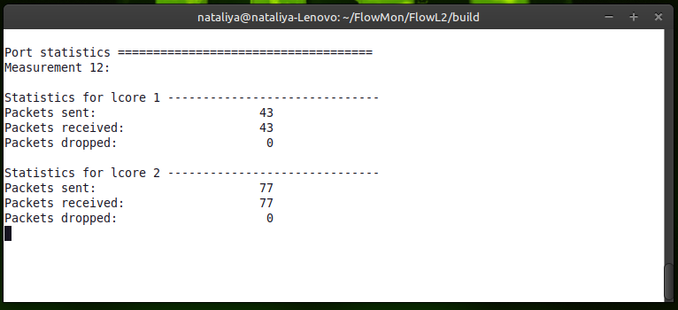
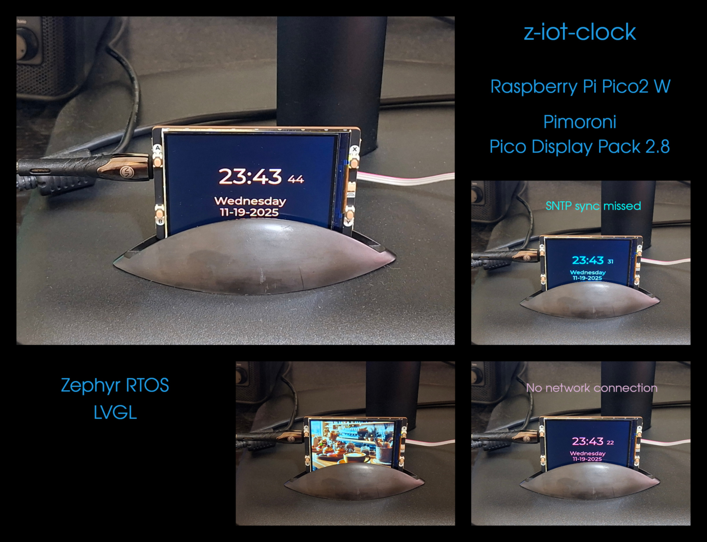

Hi, I'm Nataliya Korovkina, aspiring embedded software engineer. Currently enrolled in the Computer Engineering program at Algonquin College (2026 - 2028)
Projects
- All
- C language
- Linux
- Virtualization
- Other
FlowL2
High-performance Real-Time DPDK-based flow monitor FlowL2
ⓘ
- Developed and tested a user-space traffic monitor using DPDK to capture and analyze raw Layer 2 network packets with zero-copy efficiency
📷

- C language
- Linux
FUSE Academic Project
Computer vision-based educational learning kit integrating custom software and physical hardware
ⓘ
- Architected a computer vision-based educational learning kit integrating custom software and physical hardware
- Designed and implemented the core computer vision components using Java and OpenCV, building the OpenCV library from source for both Linux and Windows environments
- Collaborated with an industrial designer to design a custom enclosure tailored specifically to the physical configuration of the board
- Established the shared development environment, coordinated project timelines, deployed and presented the final product
📷
- Java
- Computer Vision
- OpenCV
z-iot-clock
Networked RTOS clock application running on Raspberry Pi Pico 2 W using the Zephyr RTOS ecosystem and LVGL library
ⓘ
- Designed, developed and tested the Zephyr application
📷

- C language
- Zephyr RTOS
- Networking
- LVGL
seL4 Microkernel
Contributions to seL4 Microkernel Ecosystem
ⓘ
- Contributed code to the mathematically verified seL4 microkernel, benchmarking projects, and core application frameworks
- Implemented Avnet Ultra96V2 (Zynq UltraScale+ MPSoC) support within seL4 application and virtualization frameworks
- Debugged and refactored the seL4 virtualization framework to achieve a clearer, more modular system architecture
- Designed boot infrastructure by creating custom PetaLinux images, configuring BSP layers for dual native/guest configurations, and patching Xilinx U-Boot to launch seL4 binaries
- Created a reproducible development environment using custom Docker images to isolate toolchains required for seL4 ecosystem applications
📷
- C language
- seL4
- Virtualization
Gunyah hypervisor
ⓘ
- Analyzed the Gunyah hypervisor codebase (C language) to reverse-engineer and map its high-level architectural design
- Evaluated kernel-level mechanics to build a foundational understanding of type-1 hypervisors prior to entering the seL4 ecosystem
📷
- C language
- Virtualization
Ultra96V2
ⓘ
- Executed embedded Linux bring-up on the Avnet Ultra96V2 (Zynq UltraScale+ MPSoC) platform
- Cliustomized the vendor BSP build scripts to accommodate custom target configurations
- Configured network boot capabilities (U-Boot/TFTP) to streamline the flashing and booting of Linux binaries on the target board
📷
- Linux
- PetaLinux
- Yocto
- Xilinx UltraScale+ MPSoc
Xen Hypervisor
ⓘ
- Executed Xen hypervisor bring-up on the Raspberry Pi 4B platform
- Diagnosed and patched a defect within the Linux kernel, while identifying and reporting a core hypervisor bug directly to Xen maintainers
- Configured custom BSP layers and virtualization layers utilizing the Yocto Project (Poky distribution) to build custom system images
- Established network boot infrastructure to streamline the loading and execution of Xen and Linux binaries on the target hardware
📷
- C language
- Linux
- Virtualization